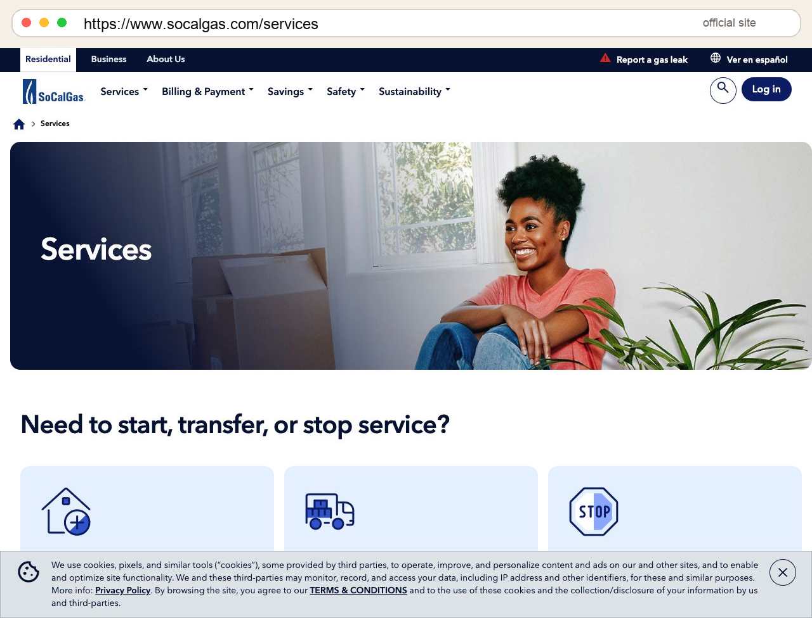

http://www.socalgas.comSoCalGas
- 到 http://www.socalgas.com，從首頁或上方選單進入 Services。
- 在 Services 頁找到 Need to start, transfer, or stop service?。
- 新買方第一次建立瓦斯帳戶，點 Start Service。
- 你已是 SoCalGas 客戶、要把舊地址移到新家，點 Transfer Service。
- 準備新家地址、服務開始日期、聯絡資訊、SSN；若沒有 SSN 或需要協助，官方頁面提供電話協助。
- 送出後保存 confirmation number / email。若需要技師進入家中開通，請安排 gate code、鑰匙與安全進入方式。
SoCalGas
- Go to http://www.socalgas.com, then open Services.
- Find Need to start, transfer, or stop service?.
- For a new gas account at the purchased home, choose Start Service.
- If you already have SoCalGas and are moving service from another address, choose Transfer Service.
- Prepare the new address, start date, contact details, and SSN. Use the official help phone if you cannot provide SSN or need assistance.
- Save the confirmation number or email. If a technician must enter the home, prepare gate code, key access, and safe entry instructions.